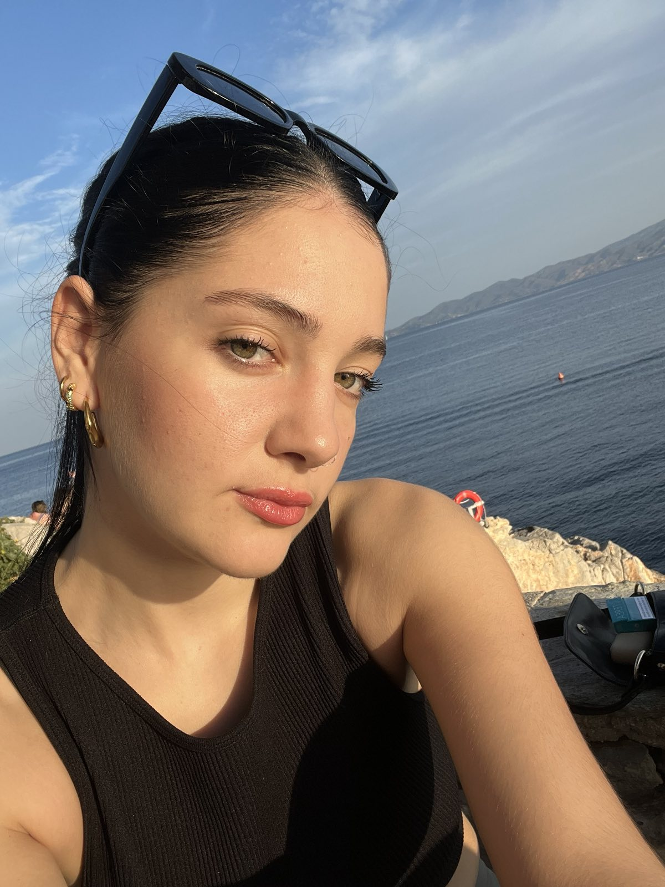
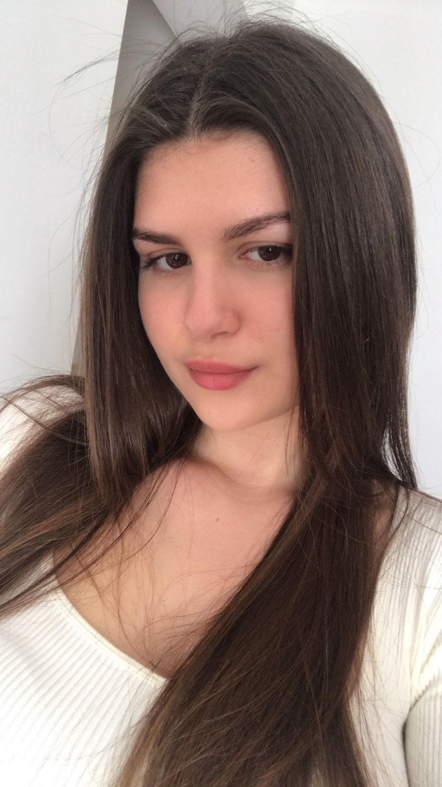

Learn more about us !

Eirini Kanavou
She was born and raised in Attica, Galatsi. She graduated from the Athens University of Economics and Bussiness in 2024.
She then worked extensively in Web Design and Digital Marketing, as well as learning current skills and foreign languages.
From a young age, she did not hide her passion for sports, such as volleyball and swimming, in which she still trains.

Stavroula Papadopoulou
She was born and raised in Attica, Μarathon since 2001.
She completed her studies from the IT department of the Athens University of Economics and Business in 2024 and then worked in front end development.
She holds an MA in English and in her free time she enjoys sports such as track and tennis and her hobby is playing the guitar.
With the relationship they developed during their student years and after, they managed to create a profitable rental business.
The website receives thousands of visits every day in Greece and Cyprus, while they aim to expand to other European countries as well.